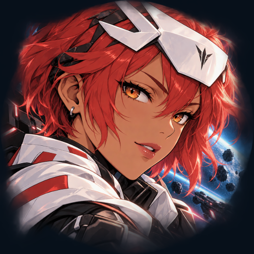

<- all projects

Starfall Sync
PC
Volume
Live
Dodge anime bullet storms, graze for power and unleash your Sync Burst.
Starfall Sync is an anime bullet hell space shooter starring Sol, a pilot who turns close calls into power. Your craft fires on its own while you steer through the storm, and only a tiny white core can be hit. Graze bullet patterns to build Sync, switch Focus to tighten your spread and release a screen-clearing Sync Burst. After every wave, draft one of three modules from ten families, and strengthen your next launch with six permanent upgrades. Fly 24 campaign encounters in six sectors against eight boss pattern families, then try the daily run and endless waves.